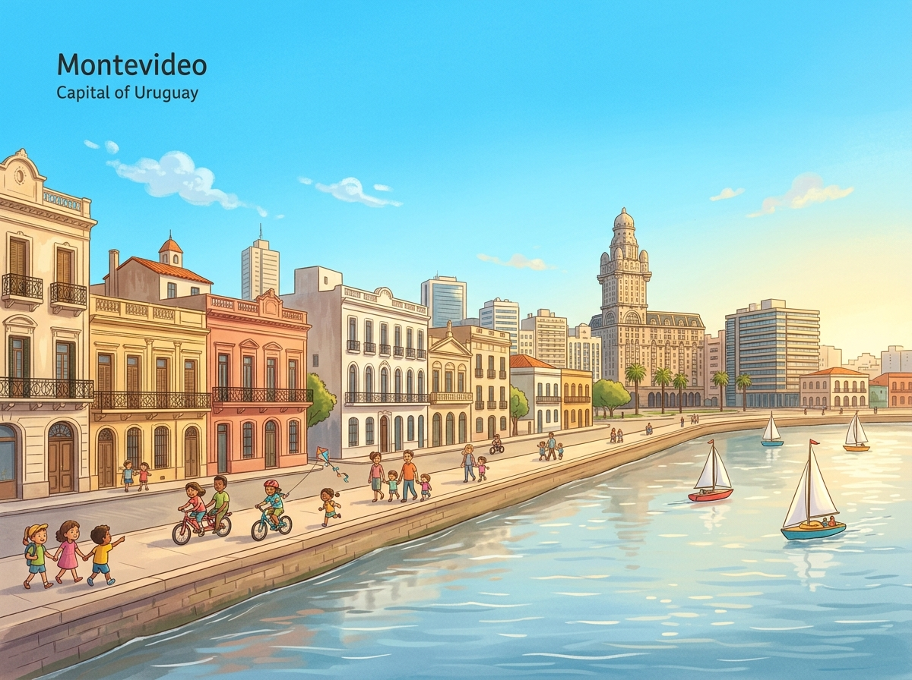
Hier stehen die wichtigsten Daten zu deinem Land. In der App baust du daraus deinen eigenen Steckbrief.
| Hauptstadt | Montevideo |
| Kontinent | Südamerika |
| Sprache | Spanisch |
| Währung | Uruguayischer Peso |
| Einwohner | etwa 3,4 Millionen Menschen |
| Fläche | rund 176.000 km² (ein eher kleines Land in Südamerika) |
| Großer Berg | Cerro Catedral, rund 514 m (der höchste Punkt des Landes) |
| Nachbarländer | Argentinien und Brasilien |
In Uruguay gibt es viele berühmte Orte. Diese vier solltest du kennen.
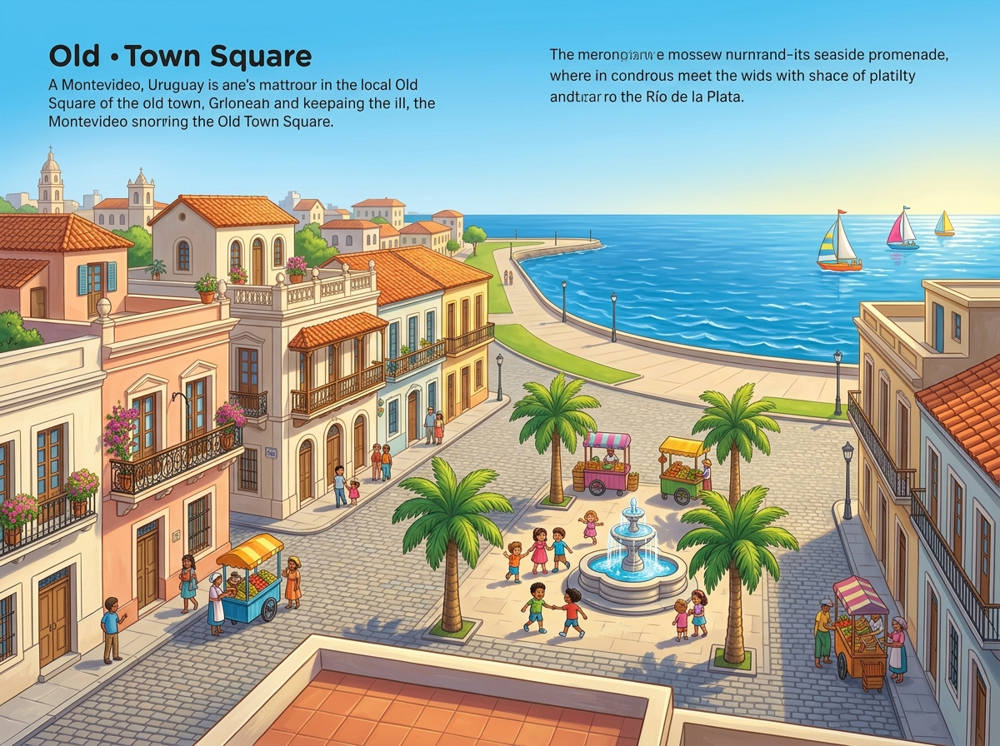
MontevideoMontevideo ist die Hauptstadt von Uruguay. Sie liegt direkt am Wasser am Río de la Plata. In der Altstadt stehen viele alte Häuser. Eine lange Strandpromenade führt am Meer entlang. Hier wohnen die meisten Menschen des Landes.
Grüne Wörter für die AppMontevideoHauptstadtam WasserAltstadtStrandpromenade
Punta del EstePunta del Este ist ein bekannter Badeort am Meer. Im Sommer kommen viele Urlauber zum Baden. Am Strand steht eine riesige Hand aus Beton. Diese Hand ragt aus dem Sand heraus. Viele Menschen machen dort ein Foto.
Grüne Wörter für die AppPunta del EsteBadeortStrandriesige HandFoto
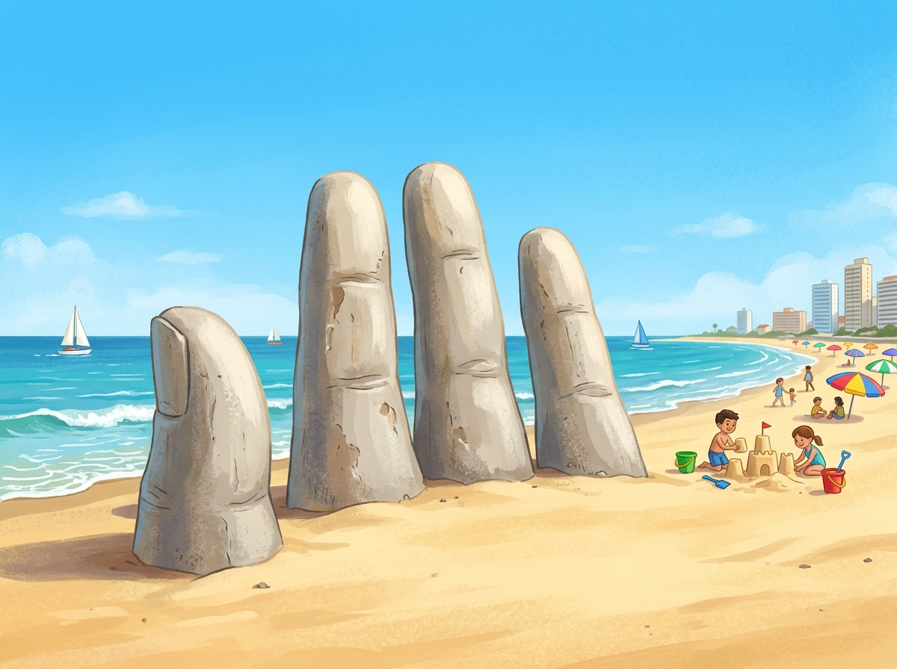
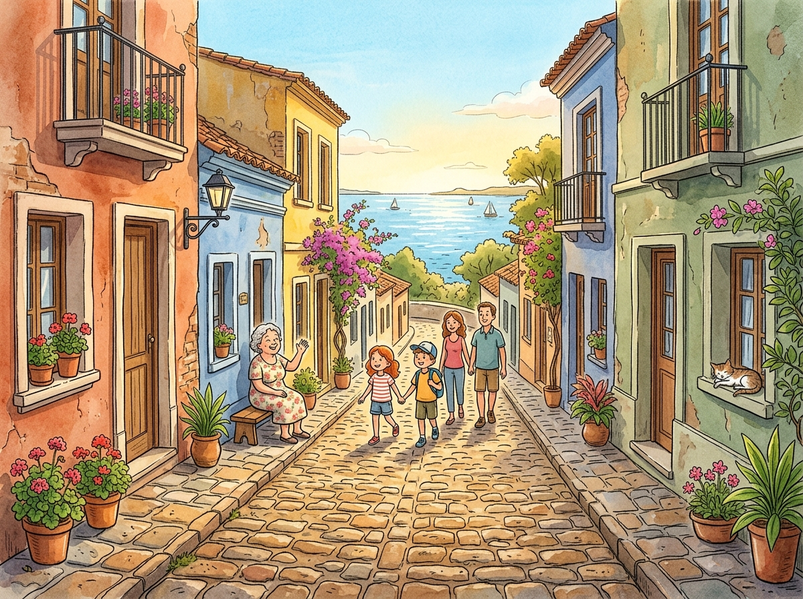
Colonia del SacramentoColonia del Sacramento ist eine sehr alte Stadt. Sie hat enge Gassen mit altem Pflaster. Die bunten Häuser sehen aus wie früher. Die Altstadt gehört zum Welterbe. Von hier blickt man über den breiten Fluss.
Grüne Wörter für die AppColonia del Sacramentoenge Gassenbunten HäuserWelterbeFluss
Cabo PolonioCabo Polonio ist ein kleines Dorf hinter den Dünen. Es gibt dort keine Straße mit Autos. Über große Sanddünen kommt man zum Meer. Auf den Felsen leben viele Seelöwen. Nachts leuchtet ein alter Leuchtturm.
Grüne Wörter für die AppCabo Poloniohinter den DünenSanddünenSeelöwenLeuchtturm
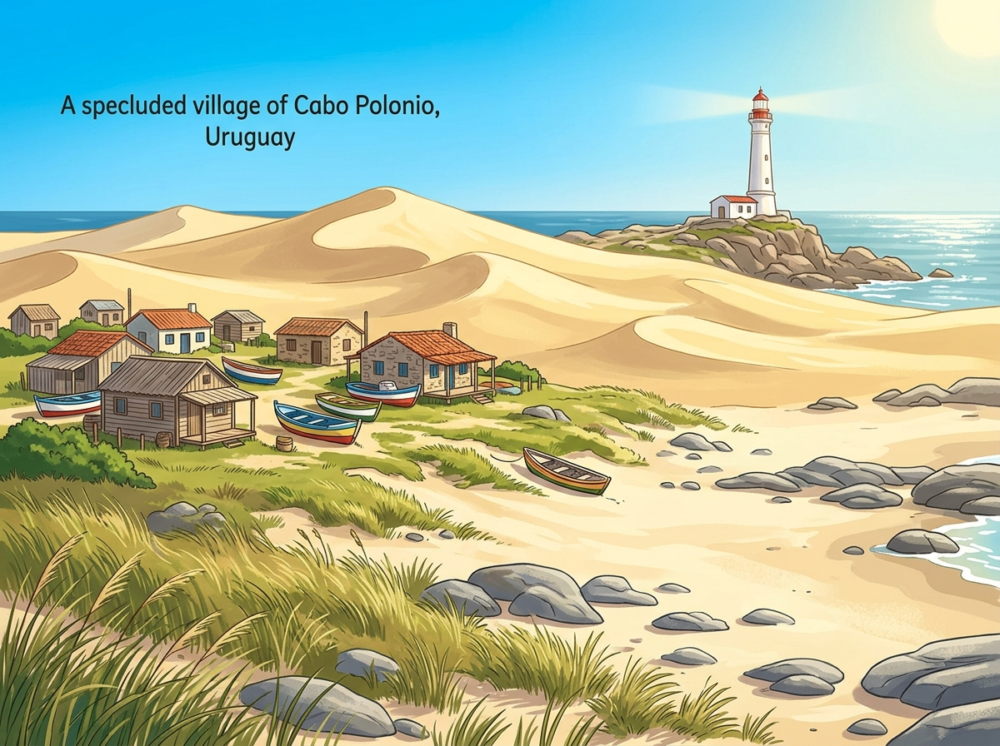
Diese Tiere leben in Uruguay und sind ganz besonders.
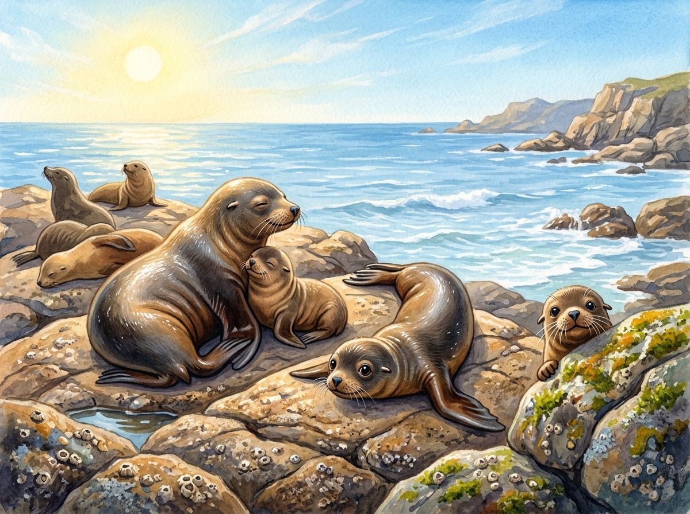
Der SeelöweAn der Küste von Uruguay leben viele Seelöwen. Sie liegen gern auf warmen Felsen in der Sonne. Im Wasser schwimmen sie schnell und fangen Fische. Seelöwen haben ein dickes Fell. Ihr lautes Brüllen hört man von weitem.
Grüne Wörter für die AppSeelöwenFelsenschwimmenFischeFell
Der NanduDer Nandu ist ein großer Laufvogel. Er kann nicht fliegen, aber sehr schnell rennen. Mit seinen langen Beinen läuft er über die Wiesen. Der Nandu frisst Gräser und kleine Tiere. Er lebt in der weiten Steppe.
Grüne Wörter für die AppNanduLaufvogelschnell rennenlangen BeinenSteppe
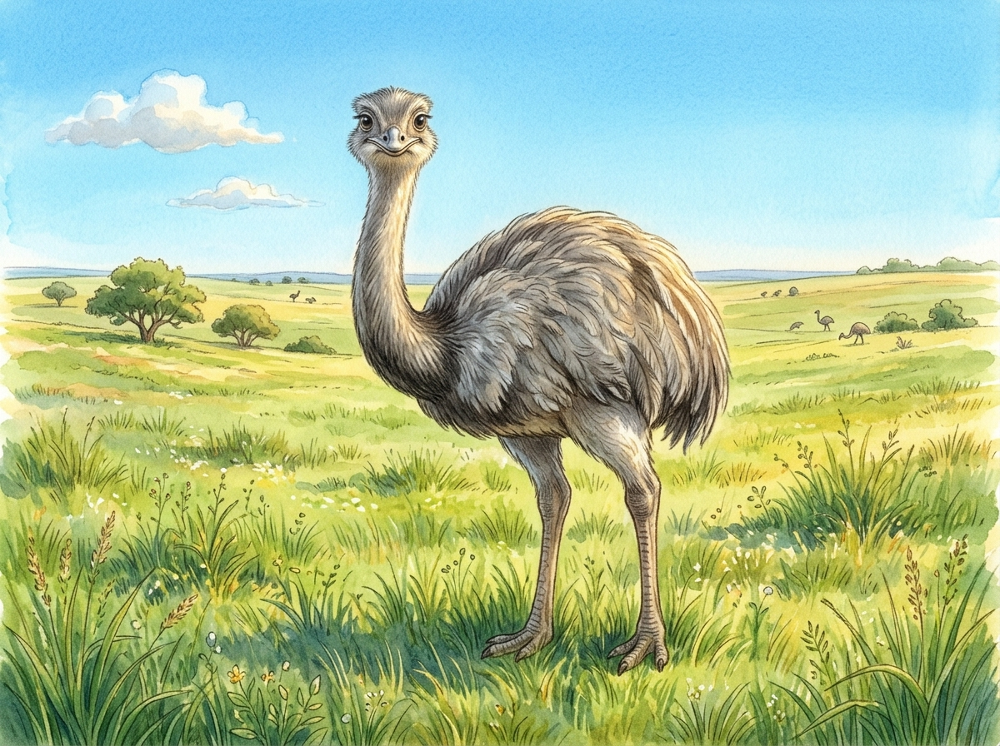
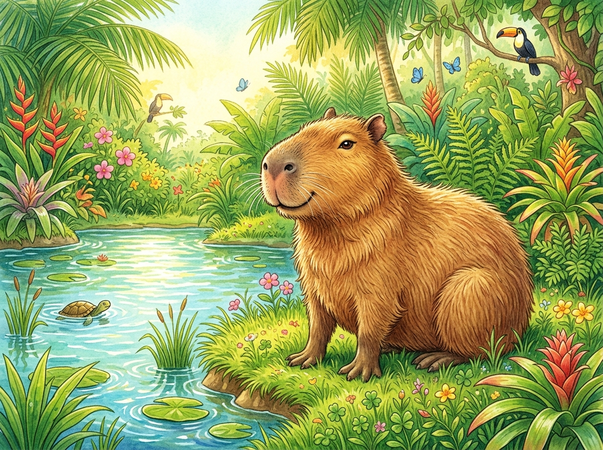
Das WasserschweinDas Wasserschwein heißt auch Capybara. Es ist das größte Nagetier der Welt. Am liebsten lebt es nahe am Wasser. Mit seinen Füßen kann es gut schwimmen. Es frisst Gräser und ruht in Gruppen.
Grüne Wörter für die AppWasserschweinCapybaragrößte Nagetieram Wasserschwimmen
In der App kannst du beim Essen das Foto nehmen oder dein Gericht selbst malen.
AsadoAsado ist gegrilltes Fleisch über dem Feuer. Die Familie trifft sich oft am Wochenende. Das Fleisch wird langsam über der Glut gegrillt. Dazu gibt es Brot und Salat. Asado ist sehr beliebt in Uruguay.
Grüne Wörter für die AppAsadogegrilltes Fleischüber dem FeuerGlutBrot
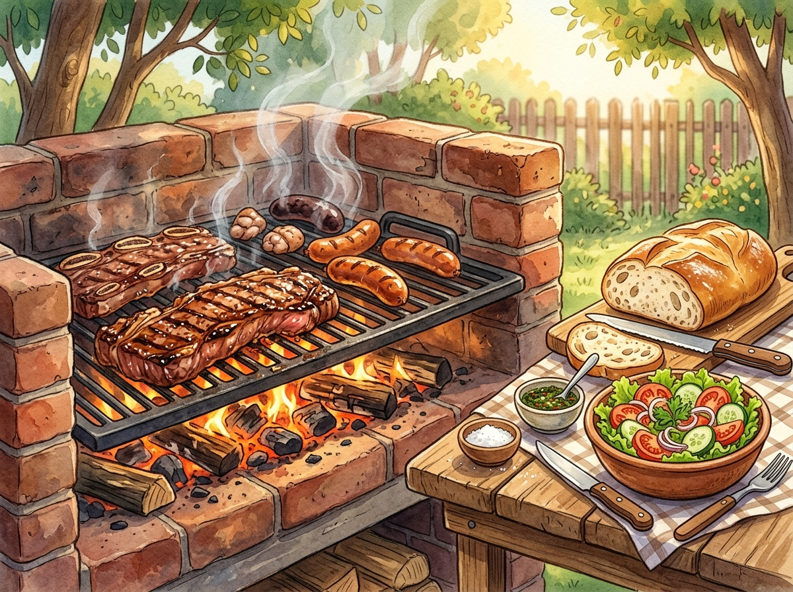
ChivitoChivito ist ein dickes belegtes Brot. Darin steckt gegrilltes Fleisch mit Käse. Dazu kommen Salat, Tomate und ein Ei. Oft isst man Pommes dazu. Chivito macht richtig satt.
Grüne Wörter für die AppChivitobelegtes Brotgegrilltes FleischEiPommes
Dulce de LecheDulce de Leche ist eine süße Creme. Sie wird aus Milch und Zucker gekocht. Lange kocht man sie, bis sie braun wird. Man streicht sie auf Brot oder in Kuchen. Kinder mögen die süße Creme sehr.
Grüne Wörter für die AppDulce de Lechesüße CremeMilch und ZuckerbraunBrot
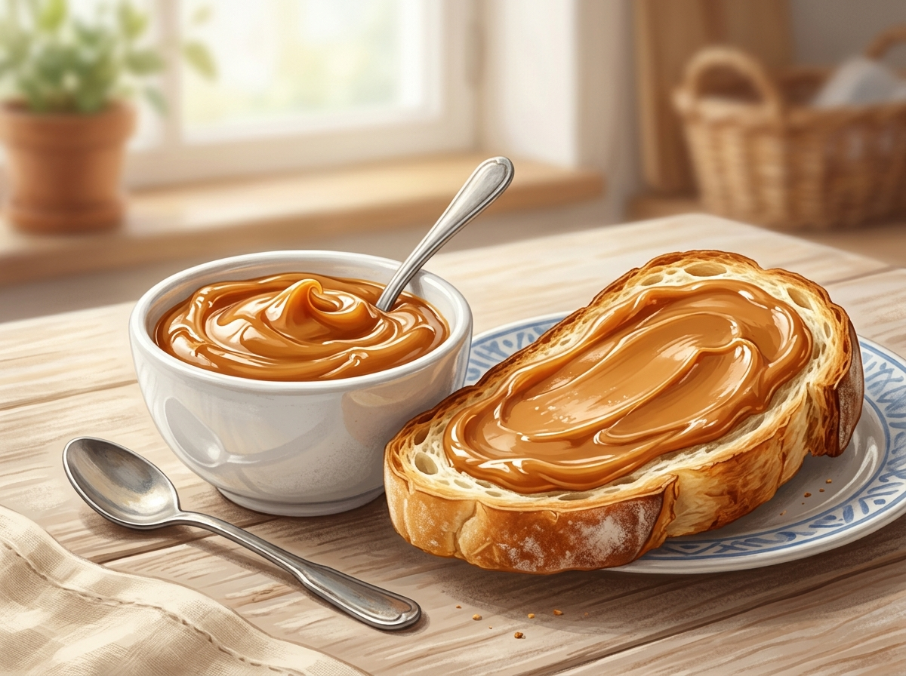
Die Nationalmannschaft von Uruguay heißt La Celeste. Das bedeutet die Himmelblaue. Uruguay hat sich für die WM 2026 qualifiziert. Der bekannteste Spieler ist Federico Valverde. Er spielt bei Real Madrid in Spanien.
Grüne Wörter für die AppLa CelesteHimmelblaueWM 2026Federico ValverdeReal Madrid
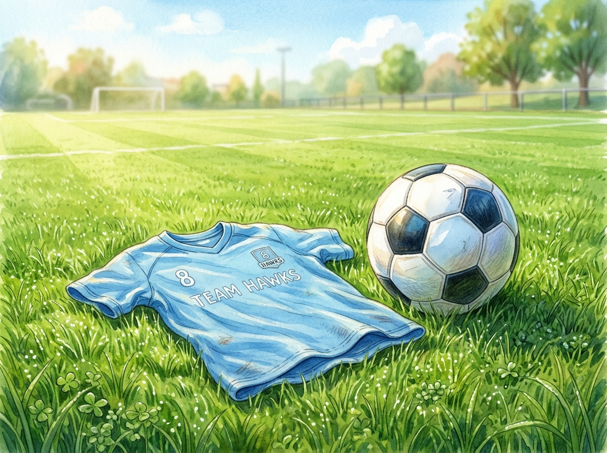
In der SchuleDie Kinder in Uruguay tragen in der Schule einen weißen Kittel. Dazu gehört eine blaue Schleife. Sie lernen Lesen, Schreiben und Rechnen auf Spanisch. Die Schule ist für alle Kinder da. Nach der Schule helfen viele zu Hause.
Grüne Wörter für die Appweißen Kittelblaue SchleifeSpanischSchulehelfen viele zu Hause
Karneval und SpielIn Uruguay wird ein langer Karneval gefeiert. Dabei spielen Trommeln den lauten Candombe. Die Kinder ziehen mit bunten Kostümen durch die Straßen. Fußball spielen sie überall sehr gern. Im Sommer gehen viele an den Strand.
Grüne Wörter für die AppKarnevalTrommelnCandombeFußballStrand